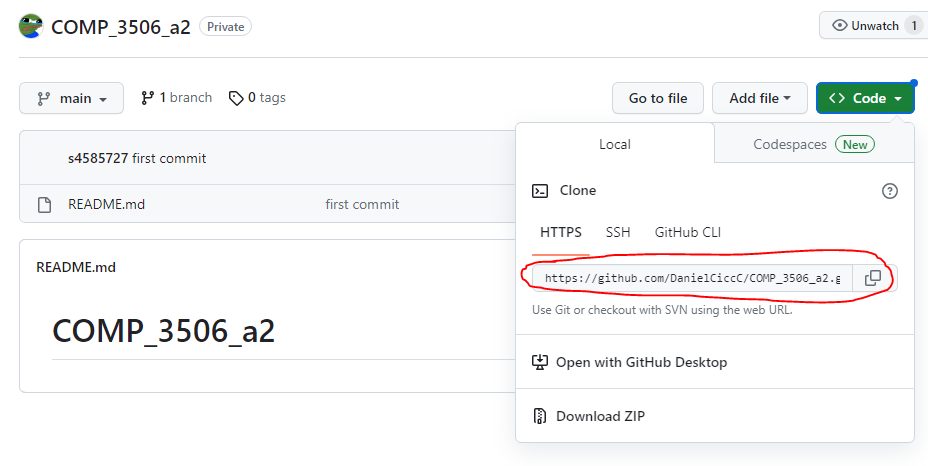
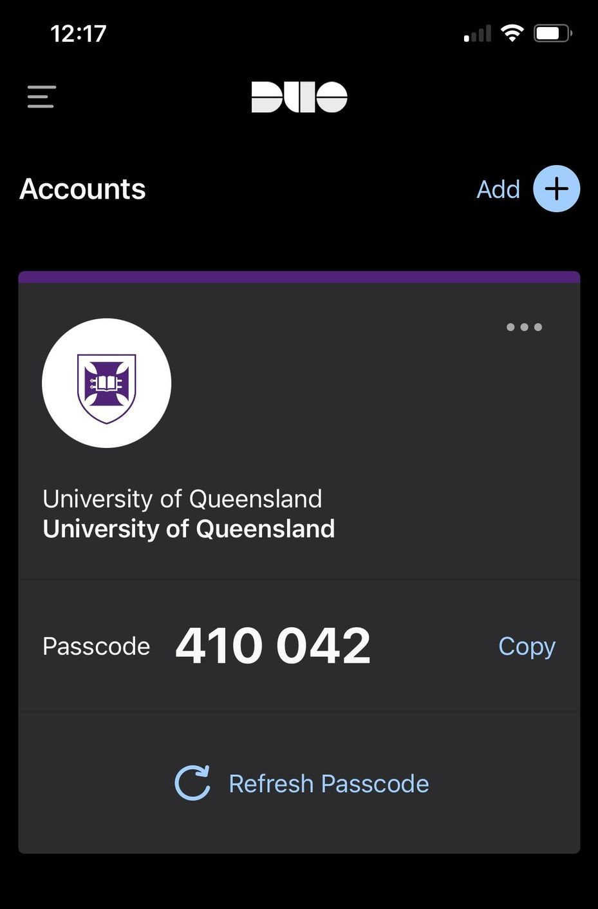

Moss Setup
I have been testing a few methods to try and use moss effectively on local. While I have had success in the past using microsoft's remote SSH extension on vscode but UQ's recent addition of 2FA has made the process a little less intuitive, plus now I'm getting flakey connectivity issues.
The best method I'm finding now is to creating a git repository and create clones into both local and moss. Using a windows machine, you can ssh into local through DOS (or PuTTY) and clone the repository in terminal, as follows:
On GitHub (or related)
- Create a new repository (make sure to make this private so your peers cannot see it)
- In the upper-right corner of any page, click your profile photo, then click developer settings.
- You will need to create a new personal access token to clone onto moss. Git reccomend their fine-grained tokens, but for our purposes classic tokens will be fine. Generate a new token and make sure the expiration easily exceeds the due date of the assignment.
- I select all scopes for safety, but
repo,write:packages,delete:packagesandadmin:orgare necessities. - Copy the key to the side for safekeeping
- Navigate to your repo and copy the HTTPS URL (circled)

On DOS
- Open a DOS prompt (where
sxxxxxxxis you student username)
ssh -l sxxxxxxx remote.labs.eait.uq.edu.au
- Type in your Password
- Next, go into your Duo app and type the six-digit passcode into the prompt for 2FA. Make sure to refresh.

- You should be in. Make a new directory to clone your repo.
cdto your new directory and clone your new repository
git clone https://github.com/{$YOUR_REPO}
- Your password will be the access token you created earlier. Copy this into your DOS prompt.
- Your repo should be setup
I created a clone to work on locally, and I will just pull any changes to work on over moss. Having a repo likes this also makes it quite simple for submitting over gradescope - now it just becomes a matter of linking up your GitHub account for access and choosing this new repository and related branch.
Happy coding :)